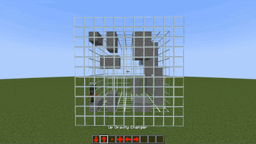
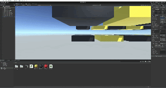
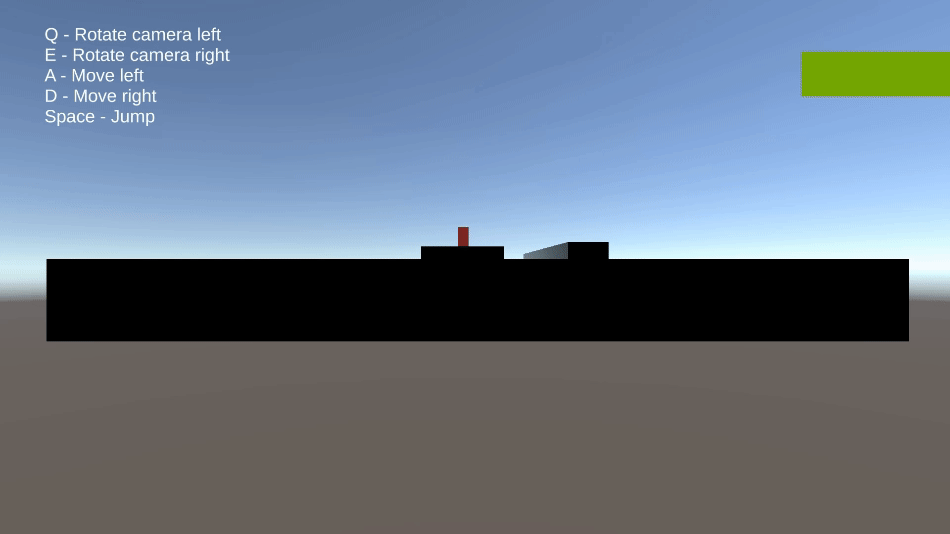
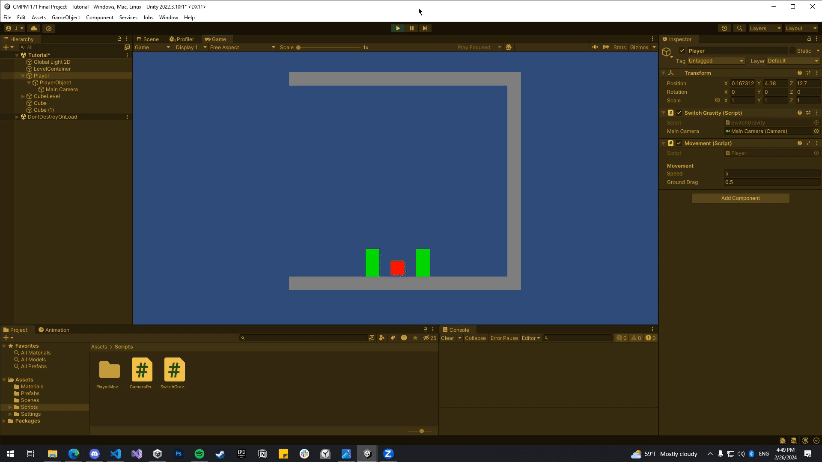

Rapid Prototyping
-
First, Jentsen and Daniel began our rapid prototyping in Minecraft; with the quick installation of the mods Freecam and Gravity Changer, we were able to create a basic prototype of what would be our game.
We quickly noted that by changing the gravitational axis, the controls of the game can feel a bit challenging to understand. Thus, we made sure to keep the controls the same regardless of the gravitational axis which helped alleviate player confusion in future builds.
-
Lukas was also able to generate a quick idea of what the camera switching would look like in Unity using primitives. This first introduced the idea that players would ONLY be allowed to move left and right.
However, we weren't completely sure if the snappy camera movement was exactly what we wanted.
-
Ernani generated another prototype revolving around smoother camera rotations. This ended up being the main script that we used in our final build. At the same time, he was able to use Github actions to auto build our Unity prototypes; this allowed us to expedite and test our games faster on our site compared to having to manually build the game over and over again.
 -
Lukas also created another protoype that centered around the idea of pushing objects onto a platform to reveal new parts around the level. This opened the door for the idea of secret passages and easter eggs. However, this ended up being a bit confusing for some players as we saw during playtests they weren't sure exactly what to do with the spheres. Also, the rigid bodies on the spheres made it difficult for some players to guide around.

-
Jentsen was working on a seemingly 2D prototype for the gravity mechanic we wanted to include in the game. At this point, the x, y, and z rotations of the player object were not locked, allowing players to realize that this was actually a 3D game viewed through a 2D camera. This unlocked a plethora of new level design possibilities for us to explore in the future.

-
Afterwards, Jentsen quickly threw multiple aspects of our prototypes together and we ended up with the base for our mechanics in our final prototype.

But there were bound to be a few bugs while we were developing the game.
 -
Lastly, after adding some free assets from the asset store, we gradually began crafting the narrative of the game. Jentsen noted that he came up with the idea of centering the story around a crab, as they are known for primarily moving left and right. With a few more assets, we decided to pursue our initial idea of a steampunk environment for the robot crab to explore, seeking objects that would enable it to survive in the ocean like a real crab. Finally, the game was starting to come together.